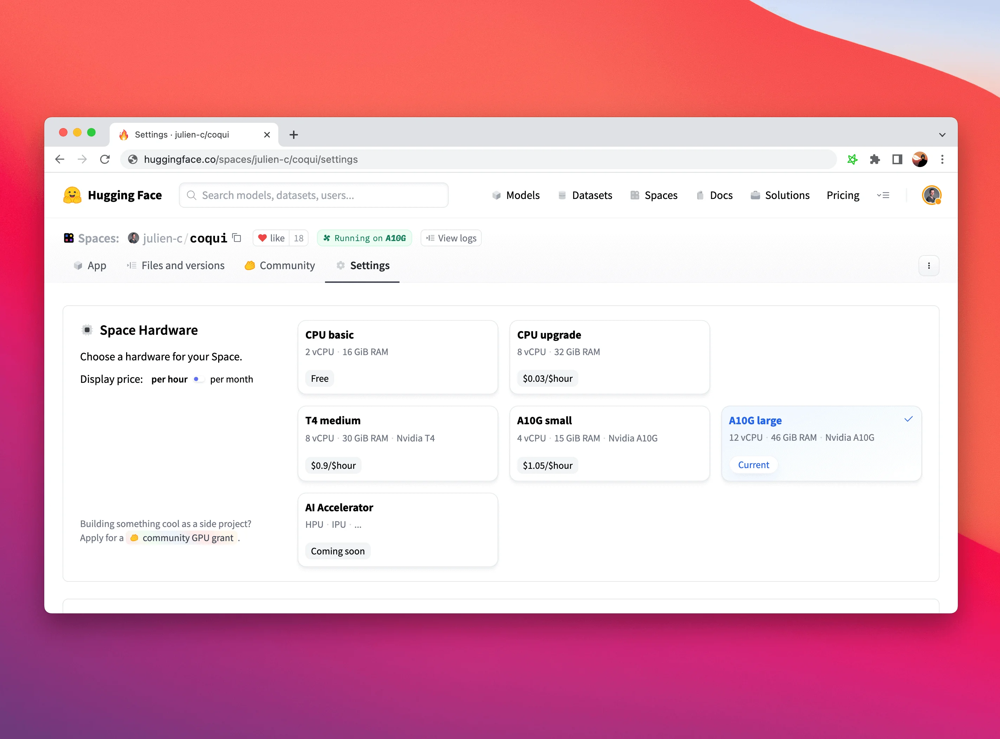

Published: 2022-11-21
Originally published at https://huggingface.co/blog/inference-update
Every day, developers and organizations are adopting models hosted on Hugging Face to turn ideas into proof-of-concept demos, and demos into production-grade applications. For instance, Transformer models have become a popular architecture for a wide range of machine learning (ML) applications, including natural language processing, computer vision, speech, and more. Recently, diffusers have become a popular architecuture for text-to-image or image-to-image generation. Other architectures are popular for other tasks, and we host all of them on the HF Hub!
At Hugging Face, we are obsessed with simplifying ML development and operations without compromising on state-of-the-art quality. In this respect, the ability to test and deploy the latest models with minimal friction is critical, all along the lifecycle of an ML project. Optimizing the cost-performance ratio is equally important, and we'd like to thank our friends at Intel for sponsoring our free CPU-based inference solutions. This is another major step in our partnership . It's also great news for our user community, who can now enjoy the speedup delivered by the Intel Xeon Ice Lake architecture at zero cost.
Now, let's review your inference options with Hugging Face.
One of my favorite features on the Hugging Face hub is the Inference Widget . Located on the model page, the Inference Widget lets you upload sample data and predict it in a single click.
Here's a sentence similarity example with the
sentence-transformers/all-MiniLM-L6-v2
model
:
It's the best way to quickly get a sense of what a model does, its output, and how it performs on a few samples from your dataset. The model is loaded on-demand on our servers and unloaded when it's not needed anymore. You don't have to write any code and the feature is free. What's not to love?
The Inference API is what powers the Inference widget under the hood. With a simple HTTP request, you can load any hub model and predict your data with it in seconds. The model URL and a valid hub token are all you need.
Here's how I can load and predict with the
xlm-roberta-base
model
in a single line:
curl https://api-inference.huggingface.co/models/xlm-roberta-base \
-X POST \
-d '{"inputs": "The answer to the universe is <mask>."}' \
-H "Authorization: Bearer HF_TOKEN"
The Inference API is the simplest way to build a prediction service that you can immediately call from your application during development and tests. No need for a bespoke API, or a model server. In addition, you can instantly switch from one model to the next and compare their performance in your application. And guess what? The Inference API is free to use.
As rate limiting is enforced, we don't recommend using the Inference API for production. Instead, you should consider Inference Endpoints.
Once you're happy with the performance of your ML model, it's time to deploy it for production. Unfortunately, when leaving the sandbox, everything becomes a concern: security, scaling, monitoring, etc. This is where a lot of ML stumble and sometimes fall. We built Inference Endpoints to solve this problem.
In just a few clicks, Inference Endpoints let you deploy any hub model on secure and scalable infrastructure, hosted in your AWS or Azure region of choice. Additional settings include CPU and GPU hosting, built-in auto-scaling, and more. This makes finding the appropriate cost/performance ratio easy, with pricing starting as low as $0.06 per hour.
Inference Endpoints support three security levels:
Public: the endpoint runs in a public Hugging Face subnet, and anyone on the Internet can access it without any authentication.
Protected: the endpoint runs in a public Hugging Face subnet, and anyone on the Internet with the appropriate Hugging Face token can access it.
Private: the endpoint runs in a private Hugging Face subnet and is not accessible on the Internet. It's only available through a private connection in your AWS or Azure account. This will satisfy the strictest compliance requirements.
To learn more about Inference Endpoints, please read this tutorial and the documentation .
Finally, Spaces is another production-ready option to deploy your model for inference on top of a simple UI framework (Gradio for instance), and we also support hardware upgrades like advanced Intel CPUs and NVIDIA GPUs. There's no better way to demo your models!
To learn more about Spaces, please take a look at the documentation and don't hesitate to browse posts or ask questions in our forum .
It couldn't be simpler. Just log in to the Hugging Face hub and browse our models . Once you've found one that you like, you can try the Inference Widget directly on the page. Clicking on the "Deploy" button, you'll get auto-generated code to deploy the model on the free Inference API for evaluation, and a direct link to deploy it to production with Inference Endpoints or Spaces.
Please give it a try and let us know what you think. We'd love to read your feedback on the Hugging Face forum .
Thank you for reading!
Julien Simon is the Chief Evangelist at Hugging Face , where he focuses on democratizing AI and making transformers accessible to everyone. A leading voice in open-source AI and small language models, he helps developers and enterprises bring their AI ideas to life. In his spare time, he reads the works of JRR Tolkien again and again.